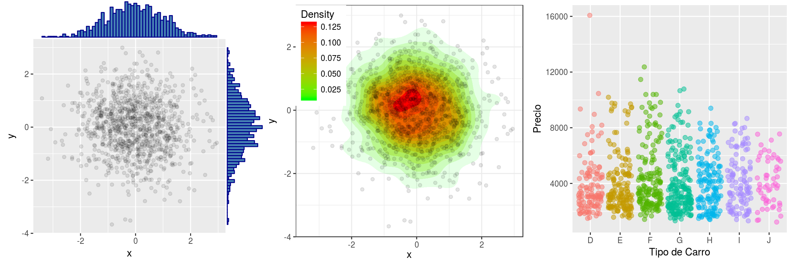

Programación en R.
Módulo 04 - Visualización de datos.
Agenda del Curso
Módulo 1: Introducción a la programación en R.
- Ambiente de programación.
- Tipos de datos y estructuras de datos básicos.
- Control de flujo y funciones.
Módulo 2: Manejo de datos estructurados.
- Operaciones sobre dataframes.
- Joins y funciones estadísticas.
Módulo 3: Importar y exportar archivos de datos.
- Importar y exportar archivos de datos.
- Conexión a bases de datos SQL.
Módulo 4: Visualización de datos.
- Librería ggplot2 y elementos estéticos de gráficos.
Módulo 4: Visualización de datos.
¿Qué es ggplot2 ?
Es un paquete de visualización de datos para el lenguaje R.
ggviene de Grammar of Graphics o gramática de gráficos (Leland Wilkinson).Es una representación esquemática y en capas de lo que se dibuja en dichos gráficos.
La instalación es bastante sencilla.
install.packages("ggplot2", dep=TRUE)


Capas
Las visualizaciones de
ggplotse construyen paso a paso agregando nuevos elementos, uno encima de otro, usando el operador+.Estos nuevos elementos, son denominadas
capas.Data&aesthetics.Geometries.Facets.Statistics.Coordinates.Theme.

Para utilizar esta librería, basta con cargarla como:
library("ggplot2")
Data & aesthetics
Uno de los elementos más importantes de un gráfico son los datos (
data) que se quieren presentar. Una particularidad deggplot2es que sólo se acepta un tipo de datos,dataframes.Para crear un objeto
ggplotprotográfico, basta con seguir la siguiente instrucción.
ggplot(data)
Los ejemplos descritos, se encuentran en:
Código: M4_C1_script01.R
Ejemplo 1
data("iris")
ggplot(data = iris)
Esto, sólo contiene los datos, aún no hemos indicado qué queremos hacer con el conjunto de datos iris.
Data & aesthetics
En
ggplot,aes()hace referencia al contenido estético del gráfico (del ingles aesthetics). Es decir, la función le dará indicios aggplot2sobre cómo dibujar los distintos trazos, formas, colores y tamaños.Es importante notar que
aes()crea una nueva capa en relación a las variables y agrega leyendas a los gráficos.Los ejemplos descritos, se encuentran en:
Código: M4_C1_script01.R
Ejemplo 2
data("iris")
ggplot(data = iris, aes(
x = Sepal.Length, y = Petal.Length,
colour = Species))
Si bien reconoce los ejes, aún sigue siendo un protográfico.
Geometries
Las capas
geom_*()paraggplot2son los verbos del lenguaje de los gráficos.Indican qué hacer con los datos y las estéticas elegidas y cómo representarlos en un lienzo.
Las geometrías mas usadas son:
geom_point()geom_line()geom_boxplot()geom_histogram()geom_bar()geom_density()
Algunos de los ejemplos que se pueden lograr con ggplot.


librerías complementarias a ggplot2
geom_point()
La función
geom_point()agrega una capa de puntos al gráfico creando un diagrama de dispersión o scatterplot.La sintáxis para generar este tipo de gráfico, es la siguiente :
ggplot(data, aes(x=x, y=y)) +
geom_point()
dataes un dataframe.Los ejemplos descritos, se encuentran en:
Código: M4_C1_script02.R
Ejemplo 3
ggplot(data = iris, aes(
x = Sepal.Length, y = Petal.Length)) +
geom_point()
Dentro de geom_point() podemos utilizar diferentes atributos, por ejemplo
tamaño, forma, translucidez de los puntos, entre otros.
geom_point()
Ejemplo 4
ggplot(data = iris, aes(x = Sepal.Length,
y = Petal.Length, colour = Species)) +
geom_point(size = 3)
Ejemplo 5
ggplot(data = iris, aes(x = Sepal.Length,
y = Petal.Length, colour = Species)) +
geom_point(size = 3, aes(shape=Species))

geom_point()
Ejemplo 6
ggplot(data = iris, aes(x=Sepal.Length,
y=Petal.Length, group=Species)) +
geom_point(aes(shape=Species,
color=Species), size = 3)
Ejemplo 7
ggplot(data = iris, aes(x = Sepal.Length,
y = Petal.Length, colour = Species)) +
geom_point(size = 3,
alpha = 0.5)
geom_line()
La capa
geom_line()se usa frecuentemente cuando hay una variable de datos continuos ordenada secuencialmente (ejemplo: series de tiempo).La sintáxis para generar este tipo de gráfico, es la siguiente:
ggplot(data , aes(x=x, y=y)) + geom_line()Los ejemplos descritos, se encuentran en:
Código: M4_C1_script03.R
Ejemplo 8
ggplot(data = economics, aes(x=date,
y=uempmed)) + geom_line()
Dentro de geom_line() podemos utilizar diferentes atributos, por ejemplo
tamaño, forma, translucidez de los puntos, entre otros.
geom_line()
Ejemplo 9
ggplot(data = economics, aes(x=date,
y=uempmed)) + geom_line(size = 1.5,
color = "blue", alpha = 0.5)

Ejemplo 10
ggplot(data = gapminder, aes(x=year,
y=life_expectancy, by=country,
colour=continent)) + geom_line()

geom_boxplot()
La capa
geom_boxplot()visualiza en forma compacta la distribución de una variable continua. Visualiza cinco estadísticas de resumen (la mediana, dos bisagras y dos bigotes) y todos los puntos periféricos individualmente.La sintáxis para generar este tipo de gráfico, es la siguiente:
ggplot(data , aes(x=x, y=y)) + geom_boxplot()Los ejemplos descritos, se encuentran en:
Código: M4_C1_script04.R
Ejemplo 11
ggplot(diamonds, aes(x=cut, y=price)) +
geom_boxplot()
Dentro de geom_boxplot() podemos utilizar diferentes atributos, por ejemplo
tamaño, forma, translucidez de los puntos, entre otros.
geom_boxplot()
Ejemplo 12
ggplot(diamonds, aes(x=cut, y=price,
fill=cut)) + geom_boxplot(
outlier.colour = "red")
Ejemplo 13
ggplot(diamonds, aes(x=cut, y=price, fill=cut)) +
geom_boxplot(outlier.colour = "red",
outlier.size = 1, outlier.shape = 16)
geom_boxplot()
Ejemplo 14
ggplot(diamonds, aes(x=cut, y=price,
fill=cut)) + geom_boxplot(notch=TRUE)
Ejemplo 15
ggplot(diamonds, aes(x=cut, y=price,
fill=cut)) + geom_violin()
geom_histogram()
La capa
geom_histogram()visualiza la distribución de una variable continua. En este sentido, muestra en su defecto el histograma de una variable y las frecuencias absolutas de cada marca de clase obins.La sintáxis para generar este tipo de gráfico, es la siguiente:
ggplot(data , aes(x=x, y=y)) + geom_histogram()Los ejemplos descritos, se encuentran en:
Código: M4_C1_script05.R
Ejemplo 16
ggplot(diamonds, aes(x=carat)) +
geom_histogram(bins=30)
Dentro de geom_histogram() podemos utilizar diferentes atributos, por ejemplo
tamaño, forma, translucidez de los puntos, entre otros.
geom_histogram()
Ejemplo 17
ggplot(diamonds, aes(x=carat)) +
geom_histogram(binwidth=0.05)
Ejemplo 18
ggplot(diamonds, aes(x=carat)) +
geom_histogram(alpha=0.2, fill="blue")
geom_density()
Visualiza la estimación de la densidad de kernel, que es una versión suavizada del histograma. Esta es una alternativa útil al histograma para datos continuos.
La sintáxis para generar este tipo de gráfico, es la siguiente:
ggplot(data , aes(x=x, y=y)) + geom_density()Los ejemplos descritos, se encuentran en:
Código: M4_C1_script06.R
Ejemplo 19
ggplot(mpg, aes(x=cty)) +
geom_density(kernel="gaussian")
geom_density()
Ejemplo 20
ggplot(mpg, aes(x=cty, color=drv,
fill=drv)) + geom_density(alpha = 0.1)
Ejemplo 21
ggplot(mpg, aes(x=cty, color=drv)) +
geom_density(alpha = 0.1)
geom_bar()
Visualiza la cantidad de veces que ocurre un evento. La altura de las barras representa el número de observaciones de una c ategoría discreta representada en el eje de X.
La sintáxis para generar este tipo de gráfico, es la siguiente:
ggplot(data, aes(x=x)) + geom_bar()Los ejemplos descritos, se encuentran en:
Código: M4_C1_script07.R
Ejemplo 22
ggplot(diamonds, aes(cut)) +
geom_bar()
geom_bar()
Ejemplo 23
ggplot(diamonds) + geom_bar(mapping =
aes(x = cut, colour = cut))
Ejemplo 24
ggplot(diamonds) + geom_bar(mapping =
aes(x = cut, fill = cut))